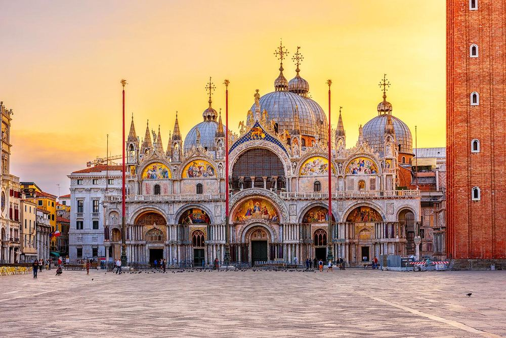

圣马可大教堂 Basilica di San Marco
书里讲了一个很“威尼斯”的传说：828年，威尼斯商人据称把圣马可遗骸从埃及偷运出来，为避开检查还藏在猪油桶里；城市随后围绕这位守护圣人建起大教堂。
现场看什么
看拜占庭式圆顶、金色马赛克和外立面细节。它最能解释威尼斯为何不像一座纯粹“意大利式”城市，而更像东西方贸易世界的混合体。
看拜占庭式圆顶、金色马赛克和外立面细节。它最能解释威尼斯为何不像一座纯粹“意大利式”城市，而更像东西方贸易世界的混合体。
📍 9/26 · 圣马可广场核心；你们目前以外观为主
图源：《Lonely Planet Italy》p.975 · catarina belova / Shutterstock · 低分辨率个人行程参考图